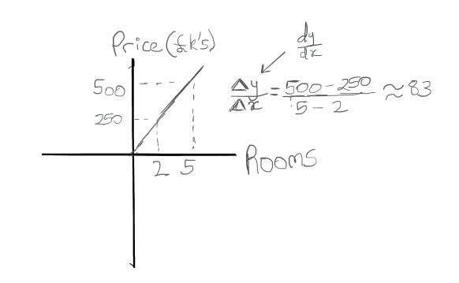

The word is latin for "small pebbles", which were used as a means for measurement (e.g. counting votes). If you think of Geometry as the study of shapes and spaces, Probability as the study of chance, then Calculus is simply the study of change.
Scenario: You're looking to buy a house in a certain area, and you notice the main factor influencing price is the number of rooms available. The following graph depicts some observations:

The cool thing here is that you can calculate the sensitivity of the price change to
± one room. That's what the slope of the line represents. So if we change the number of rooms by 1, the price will change in magnitude by £83k. In other words, the rate of change in the house price with respect to a room is £83k. Some note this as
∂y/∂x, which represents the difference in y with respect to the difference in x, i.e. the gradient of the line.
Things get interesting as we try to make the math more representative of the reality, i.e. more realistic! Often, this gives us more complex functions, that then translate to curves on graphs. Secant line explanation